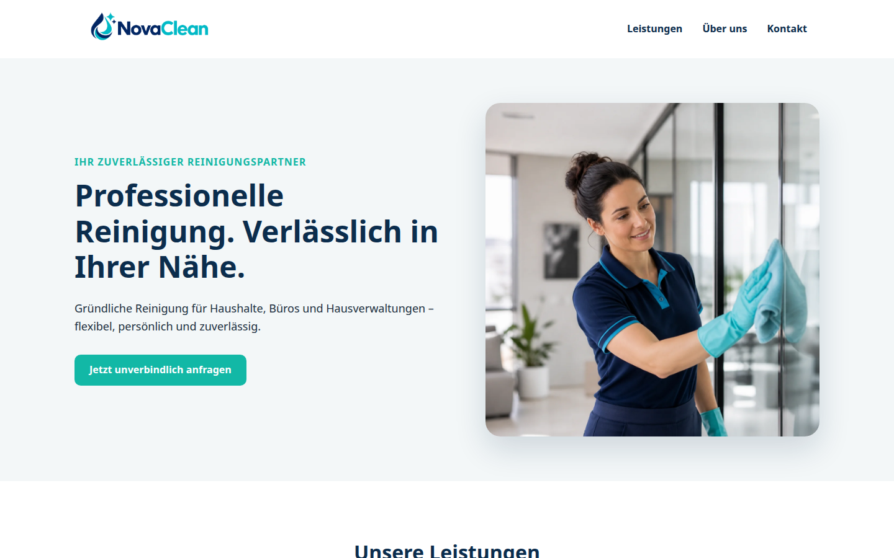
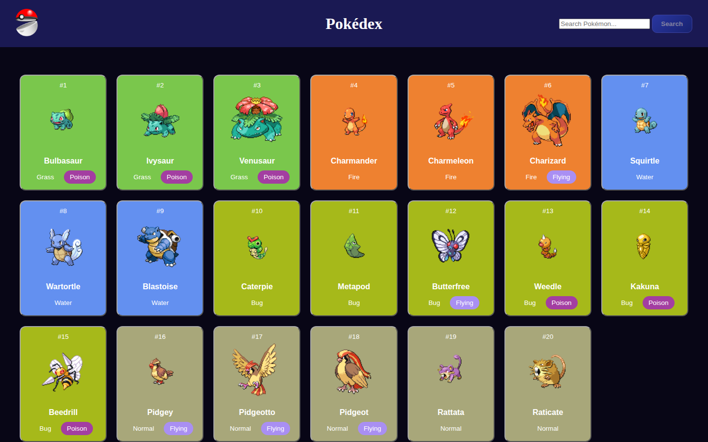
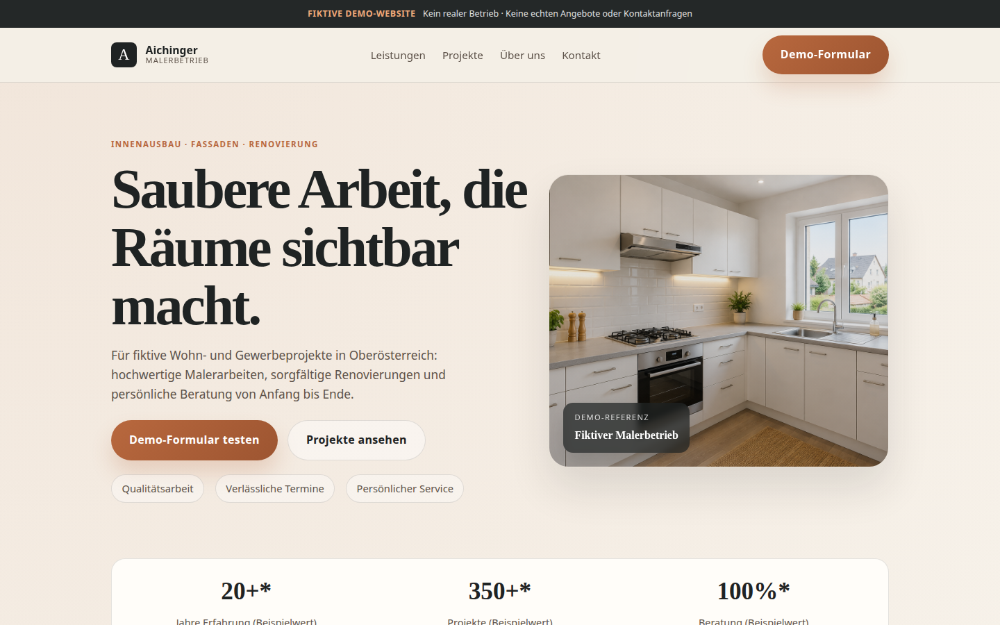

Angehender Full-Stack-Entwickler
In meinem persönlichen Lern- und Bewerbungsportfolio zeige ich eigene Webprojekte sowie meine Kenntnisse in moderner Frontend-Entwicklung und der Integration externer APIs. Mein nächstes Ziel ist die Backend-Entwicklung, um künftig vollständige Full-Stack-Webanwendungen und eigene APIs umzusetzen.
Ich befinde mich in der Ausbildung zum Softwareentwickler und vertiefe derzeit meine Kenntnisse in HTML, CSS, JavaScript, responsivem Webdesign, benutzerfreundlichen Oberflächen und der Anbindung externer APIs. Als nächste Schritte folgen Backend-Entwicklung, Datenbanken und die Entwicklung eigener APIs. Dieses persönliche Portfolio dokumentiert meinen Lernfortschritt anhand eigener Demo- und Übungsprojekte.
Semantisches HTML und modernes CSS für responsive Designs auf allen Geräten.
Interaktive Funktionen, DOM-Manipulation und Arbeit mit APIs.
Professionelle Designs und Layouts, die auf allen Bildschirmgrößen perfekt funktionieren.
Schnelle Websites, grundlegende SEO-Optimierung und bessere Rankings.
Versionskontrolle und Veröffentlichung über GitHub Pages.
Anbindung externer Dienste und dynamischer Datenquellen.

Eine professionelle One-Page-Website für eine Reinigungsfirma mit modernem Design, responsiven Layouts, optimierter Navigation und klaren Call-to-Action-Buttons. Das Projekt zeigt meine Fähigkeiten im Webdesign und bei der Gestaltung klarer Nutzerwege.

Eine interaktive Webanwendung mit HTML, CSS und JavaScript. Arbeitet mit der PokéAPI, zeigt meine Fähigkeiten in asynchronem JavaScript, API-Integration, dynamischen Templates und erweiterten Suchfunktionen.

Eine fiktive, responsive Unternehmenswebseite für einen Malerbetrieb. Mit modernem One-Page-Design, Vorher-Nachher- Projekten, mobiler Navigation, barrierearmen Bedienelementen und einem klar gekennzeichneten Demo-Kontaktformular. Umgesetzt mit HTML, CSS und JavaScript.
Modern, schnell und für Smartphones optimiert.
Sauberer Code ohne unnötige Frameworks.
Funktional und benutzerfreundlich.
Technische Umsetzung und Veröffentlichung im Web.
Grundlegende Suchmaschinenoptimierung.
So gehe ich bei der Konzeption und Umsetzung eigener Webprojekte vor – von der ersten Idee bis zur Veröffentlichung.
Ich definiere Ziele, Zielgruppe, Inhalte und Seitenstruktur.
Ich plane Farben, Typografie und ein responsives Layout.
Ich setze das Design mit HTML, CSS und JavaScript um.
Ich prüfe Bedienbarkeit, responsive Darstellung und Performance.
Ich versioniere das Projekt und stelle es online bereit.
Du möchtest dich über eines meiner Projekte austauschen oder hast eine Idee für ein mögliches Webprojekt? Schreib mir gerne unverbindlich per E-Mail, folge mir auf Instagram oder sieh dir mein GitHub-Profil an.